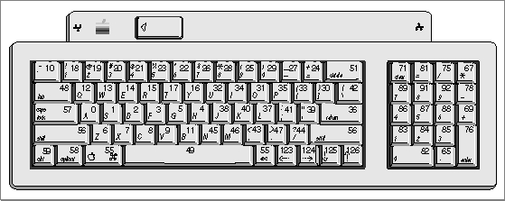
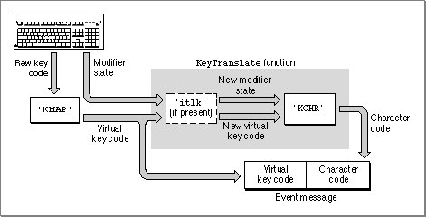
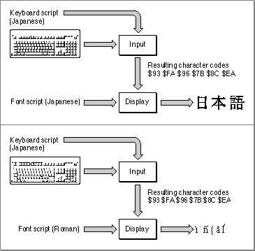
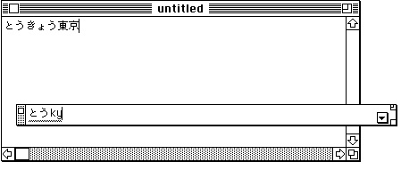
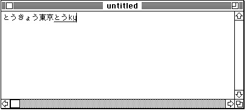
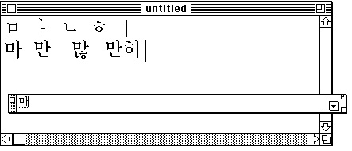

Legacy Document
Important: The information in this document is obsolete and should not be used for new development.
Important: The information in this document is obsolete and should not be used for new development.


Text Input
Typically, your application accepts text input from the user through the keyboard. The Macintosh script management system allows you to accept text input in any script system, and to switch easily among input script systems.Keyboard input is a complex process that involves conversion of hardware keypresses to software raw key codes, then to virtual key codes, and finally to character codes. Subsequent display of those input characters on the screen involves conversion of character codes to the glyphs of a font, and the drawing of those glyphs on the screen. As noted under "Separation of Tasks" beginning on page 1-4, text input and text display are completely independent of each other.
The conversion of keypresses to character codes is complex because the Macintosh computer has to support many different physical keyboards and many script systems. The conversion of raw key codes to virtual key codes accommodates the spectrum of keyboards; the conversion of virtual key codes to character codes accommodates the spectrum of script systems.
For 1-byte script systems, characters are generated directly from keypresses. For 2-byte script systems, the large number of characters makes direct keyboard input impractical; those systems provide input methods to make text input more convenient.
Keyboards and Key Translation
Every Macintosh keyboard has a specific physical arrangement of keys. An example is shown in Figure 1-52. The figure shows the physical arrangement of keys on the domestic (U.S.) layout of the Apple Keyboard II. It also shows the virtual key codes produced when each key is pressed, as well as the character generated (for U.S. system software) by each key.Figure 1-52 Apple Keyboard II (domestic layout)
 Other keyboards produce a similar set of virtual key codes, although the keys and their codes may be arranged differently. Apple supports at least 13 separate physical keyboards, listed in the appendix "Keyboard Resources" in this book. All can produce a set of hardware-independent virtual key codes, which translate directly into the characters of any script system. That process is called key translation.
As far as the application is concerned, text input for all keyboards and for all script systems is hardware-independent. Except for a few minor hardware-specific characteristics, the function of the keyboard is completely determined by a script system's keyboard-layout (
'KCHR') resources. Tables within the keyboard-layout resource specify the characters produced by each key in combination with each modifier key (Command, Shift, Caps Lock, Control, and Option).Figure 1-53 illustrates the process of key translation. A keypress initially produces a raw key code. The keyboard driver uses the hardware-dependent key-map (
'KMAP') resource to map the raw key code into a hardware-independent virtual key code and to set bits indicating the state (up or down) of the modifier keys. It then calls the Event ManagerKeyTranslatefunction.If the optional key-remap (
'itlk') resource is present,KeyTranslateuses it to remap certain key combinations on certain keyboards before performing additional processing. The key-remap resource transforms this information based on which keyboard is in use. It reintroduces hardware dependence because certain writing systems, languages, and regions need subtle differences in layout for specific keyboards. Generally, the key-remap resource affects only a few keys.The
KeyTranslatefunction then uses the current script's keyboard-layout resource to map the virtual key code and modifier state into a character code.KeyTranslatereturns the character code, and the keyboard driver posts the key-down event into the event queue. The application receives the original virtual key code and a character code in themessagefield of the event record, and modifier-key information in themodifiersfield of the event record. The
KeyTranslatefunction is described in the chapter "Event Manager" in Inside Macintosh: Macintosh Toolbox Essentials. For additional information on theKeyTranslatefunction and the keyboard-layout resource, see the appendix "Keyboard Resources" in this book.
- Dead keys
- The keyboard-layout resource also handles dead keys, by means of additional subtables. A dead key is a key combination that has no immediate effect, but sets a state that affects the results of the next keypress (typically, the generation of one or two characters). Dead keys are commonly used to generate accents and accented characters. Dead-key processing is discussed in more detail in the appendix "Keyboard Resources" in this book.

Font and Keyboard Synchronization
Whenever your application displays text as it is being entered at the keyboard, it needs to keep the font script coordinated with the keyboard script (see "Font Script and Keyboard Script" beginning on page 1-51). The upper half of Figure 1-54 shows an example of font and keyboard synchronization with the user entering the characters for Nihongo when the font script corresponds to the keyboard script, which is Japanese. The lower half of Figure 1-54 provides an example of the characters that are displayed when the user enters the same characters when the font script does not match the keyboard script. If the two scripts don't match, the results are meaningless to the user.Figure 1-54 Font script and keyboard script synchronization
 You use the Script Manager
KeyScriptprocedure to set the keyboard script when, for example, the user chooses a new font from your Fonts menu or when the user clicks in an area of text that has a font different from the current one. The Operating System automatically changes the keyboard script (or keyboard layout or input method) when the user chooses a new one from the Keyboard menu (see Figure 1-62 on page 1-106). When that happens you need to set the font script to equal the keyboard script.The Operating System also automatically changes the keyboard script (or keyboard layout or input method) when the user presses certain key combinations, as specified by the keyboard-swap (
'KSWP') resource. When that happens you should set the font script to equal the keyboard script.You can force a particular keyboard layout to be used with your application by using the Script Manager to define the default keyboard layout for a script system and then calling
KeyScript.For more information on setting the font script and keyboard script, see the discussion on making keyboard settings and the description of the
KeyScriptprocedure in the chapter "Script Manager" in this book. For more information on the keyboard-swap resource, see the appendix "Keyboard Resources" in this book.Handling Keyboard Equivalents
Many applications support keyboard commands or keyboard equivalents to menu commands. This can be a problem in a multiscript environment. Be careful of these issues in the keyboard equivalents that you allow:
- Avoid keyboard equivalents that use the Space bar in combination with the Command key and other modifier keys. Command-Space bar and Command-Option-Space bar are already commonly used for switching among script systems and keyboard layouts. See the discussion of the
KeyScriptprocedure in the chapter "Script Manager" and the description of the keyboard-swap resource in the appendix "Keyboard Resources" in this book.- When the Command key is pressed, some characters--such as the period or question mark--cannot be produced on certain keyboard layouts. To make Command-key handling work in these cases, it may be necessary to use the virtual key code to determine which character code would have been produced if the Command key had not been pressed. For more information, see the discussion of special uses for the
KeyTranslatefunction in the appendix "Keyboard Resources" in this book.- If your application extends the set of standard Macintosh modifier-plus-key combinations for specific purposes, your keyboard equivalents might not function properly in all script systems. Be sure to supply alternative methods--such as menu or dialog-box items--for gaining access to such features.
Input Methods
Script systems for ideographic writing systems such as Japanese cannot simply use a larger keyboard or multiple dead keys for effective text input. The sheer numbers of their characters demand a more complex solution, such as providing ways to convert phonetic text into ideographic text and vice versa. Most script systems with large character sets provide for the complex parsing of phonetic sequences to produce ideograms and character clusters.Automatic conversion of phonetic glyphs into final representations is performed by an input method. For example, the Japanese script system supplements the keyboard by providing software for transcribing Kana (phonetic Japanese) into ideographic Kanji. Each Kanji character can correspond to more than one possible Kana sequence, and vice versa. The input method must grammatically parse sentences or phrases of Kana text (which has no word separations), and select the best combination of Kanji and Kana characters to represent that text.
Entry and Conversion
When a user types a character, one kind of input method opens a window (called a floating input window or bottomline input window) at the bottom of the screen for text entry; see Figure 1-55. In Japanese, the user can type using either Roman or Kana characters. When the converted glyphs are in the window, the user can freely cut and paste or convert them to any of the other subscripts.Figure 1-55 Bottomline input window for Japanese input method
 The Text Services Manager supplies an interface for input methods that use inline input. In inline input, the user types directly into an active input area within a document, as shown in Figure 1-56. Conversion then occurs within the active input area.
Figure 1-56 Active input area (underlined) for inline input
 Input methods are often extended so that glyphs may be converted in extremely precise ways. For example, in the Japanese script system, when the text is converted to Kanji, the user has the option of changing any individual phrase: lengthening it, shortening it, or selecting different possible interpretations. All of the commands that perform these changes have both mouse and keyboard equivalents. Once the user presses the Return key, the text is entered as if it had been typed directly from the keyboard.
Differences Among Script Systems
In Japanese and Chinese input methods, the principal conversion is from Roman or other phonetic input to Han (Chinese) characters. In Japanese the input can be Romaji (Roman), Hiragana (phonetic), or Katakana (phonetic); the output is Kanji (Chinese characters). In Chinese the input can be Pinyin (Roman) or Zhuyinfuhao (phonetic; also called Bopomofo), and the output is Hanzi (Chinese characters). Chinese and Japanese use a semi-automatic conversion to Han characters that requires user confirmation.The Korean script system's input method converts from Jamo (phonetic) to Hangul (clusters of Jamo). Transcription to Hanja (Chinese characters) is optional. Furthermore, the Korean input method uses a completely automatic conversion from Jamo to Hangul; user confirmation is not required.
Figure 1-57 illustrates the process of constructing Hangul from Jamo during bottomline input. Note that an added Jamo can appear in various positions (beside, beneath, and so on) relative to the Jamo or Hangul that it is added to.
Figure 1-57 Bottomline input in Korean
 To gain the greatest acceptance worldwide, your application should support text input, and preferably inline input, in 2-byte script systems. For additional information on input methods, inline input, and input-method dictionaries, see the chapters "Text Services Manager" and "Dictionary Manager" in this book.